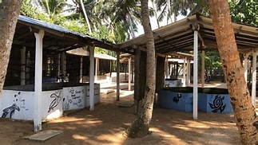

bentota turtle hatchery


There are numerous turtle hatcheries in Bentota.
The Kosgoda Sea Turtle Conservation Project, established by Dudley Perera in 19811, is one of the most well-known. About 9 kilometres
from Bentota Railway Station, it is situated at Kosgoda along the Indian Ocean shore. The effort intends to preserve the eggs and keep
them safe from predators and poachers until they hatch, at which point they will be released into the sea2.
The Bentota Turtle Hatchery Project, a well-known turtle hatchery in Bentota, attempts to conserve and protect a number of endangered turtle species,
including Olive Ridley and Leatherback turtles.
location
>